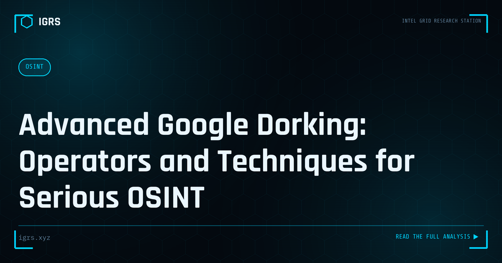

Advanced Google Dorking: Operators and Techniques for Serious OSINT
| File No. | IGRS-030/2026 |
| Subject | Comprehensive guide to advanced Google search operators for professional OSINT investigation |
| Category | OSINT Fundamentals |
| Author | Manuj Kumar Pandey |
| Published | 2026-05-20 |
| Reading time | 12 minutes |
Google's search operators are among the most powerful — and most underused — tools in the OSINT toolkit. The full operator set, with investigative use cases for each.
Advanced Google Dorking for Investigators
Google dorking — using advanced search operators to find specific information — is among the most powerful and accessible OSINT techniques. While basic dorking is widely known, advanced techniques unlock precise, targeted discovery that ordinary searches cannot achieve. For Indian investigators, mastering advanced dorking is a force multiplier across investigations. This guide covers advanced operators and techniques, used responsibly and lawfully.
Core Operators Recap
| Operator | Function |
|---|---|
| site: | Limit to a domain |
| filetype: | Find specific file types |
| intitle: | Search page titles |
| inurl: | Search within URLs |
| intext: | Search page body text |
Combining Operators
The real power of dorking emerges when operators are combined. Pairing site: with filetype: finds specific documents on a domain; combining intitle: with inurl: narrows to particular page types; adding intext: filters by content. Layering multiple operators with quotation marks for exact phrases and the minus sign to exclude terms produces highly precise queries that surface exactly the information sought from the vast index of the web.
Investigation Applications
Advanced dorking serves many investigative purposes: finding documents and information associated with a subject or organisation, discovering exposed information that should not be public, locating profiles and content across the web, and verifying information through targeted searches. For corporate investigation, dorking can reveal documents, personnel information, and organisational details. The technique's versatility makes it applicable across nearly every type of OSINT investigation.
Finding Exposed Information
One important use — for defensive purposes — is discovering an organisation's own exposed information. Dorking can reveal inadvertently published documents, exposed directories, and information that should be private. Organisations use this to find and remediate their own exposures before attackers exploit them. This defensive dorking is a legitimate security practice, helping organisations understand and reduce what they unintentionally reveal to the public web.
Operators Across Search Engines
While Google is the most common platform, other search engines offer complementary capabilities. Bing has its own operators, and specialised search engines like Shodan and Censys apply dorking concepts to internet-connected devices and services. Using multiple engines broadens coverage, as each indexes different content and offers different operators. A skilled investigator draws on several search platforms to achieve comprehensive results.
Legal and Ethical Use
Dorking must be used responsibly and lawfully. Finding publicly indexed information is legitimate, but using discovered information to access systems without authorisation, or exploiting exposed credentials, breaches the IT Act. Professional investigators use dorking to find publicly available information for legitimate purposes, respecting the line between observing what is public and exploiting what should be protected. The IGRS dorks library maintains this standard, providing lawful operators for authorised investigation.
Mastering the Technique
For Indian investigators, advanced Google dorking is a foundational skill that rewards practice and creativity. By mastering operator combinations, applying them across search engines, and maintaining ethical discipline, investigators unlock precise discovery that dramatically improves the efficiency and depth of their work. Dorking transforms general-purpose search engines into precision investigation instruments — and the investigator who masters advanced techniques gains a versatile, powerful capability applicable to nearly every investigation they undertake.